- It is a computer program that acts as an intermediary between a user of a computer and the computer hardware.
- It provides services to the user and the programs the user is running. For example:
- Loads and executes other programs
- Opens, reads, writes, closes files
- Opens, reads, writes, closes network connections
- Controls keyboard and mouse
- Provides security, protection, and privacy for programs
- Much more...
- Schedules tasks
- Multiple users
- Multiple processes
- Manages resources among multiple users/processes such as
- CPUCPU (Central Processing Unit)
- MemoryMemory
- DisksDisks
- Network Network card (NIC, Network Interface Card)
- Video Video display
- Any I/O device...
- Users can inteface with the OS through a command line (shell, keyboard) or GUI interface (windowing, mouse).
- Many definitions of an operating system
- Kernel Kernel - The core of the operating system. The single lowest level program that manages all hardware and other resources. This includes all hardware drivers.
- A driver is software that communicates directly with the hardware.
- The kernel and many (always running) services. Provides user/program access to network, disk, display, mouse, ...
- Kernel, services, and MANY application programs: word processors, web browsers, games, ...
- There may be multiple CPU's, but we'll deal mostly with only single-cpu machines.
- Most CPUs today have multiple cores.
- Modern PC's often have more than one bus bus for greater throughput.
- The performance is achieved by both clock speed and width.
- Internal bus (faster, local bus, legacy NorthbrigeNorthbridge, diagram1, diagram2)
- CPU and memory (front-side busfront-side bus, usually external to the CPU)
- Constantly evolving with newer processors, e.g. Intel QuickPath InterconnectIntel QuickPath Interconnect
- CPU and cache (back-side busback-side bus, usually internal to the CPU)
- With CPUs that have an L2 cache on the chip itself (most today), other connectivity techniques may be used.
- Diagram of the relationship between the FSB, BSB, CPU, and cache.
- Modern SoCs (System-on-a-chipSystem-on-a-chip, e.g. Raspberry PiRaspberry Pi) designs integrate the northbridge directly on the CPU.
- External bus (slower, legacy SouthbrigeSouthbridge)
- USBUSB (Universal Serial Bus)
- ThunderboltThunderbolt (combines PCIePCIe and DisplayPortDisplayPort)
- PATAPATA (Parallel AT Attachment, AT=Advanced Technology, a.k.a. IDEIDE)
- SATASATA (Serial ATA)
- SCSISCSI (Small Computer System Interface)
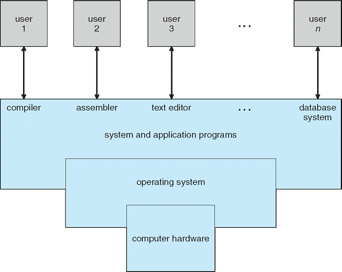 Operating System Concepts - 8th Edition Silberschatz, Galvin, Gagne ©2009
{kind=link}
{kind=link}
{kind=link}
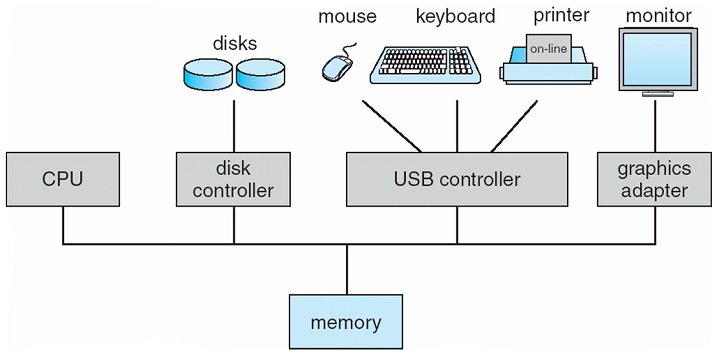 Operating System Concepts - 8th Edition Silberschatz, Galvin, Gagne ©2009
Some Background on Memory, Storage, and Computer Architecture
Memory and Storage- Storage Hierarchy
- At the top is the faster, most expensive, most volatile, and least amount in the computer.
- At the bottom is the slowest, cheapest, least volatile, and the largest amount in the computer.
- Today, we call an electronic disk an SSD SSD (Solid State Drive).
- CPU cores and cache
- Intel examples:
- AMD examples:
- System Architecture
- single CPU
- multiple CPU
- single CPU, multiple core
- multiple CPU, multiple Core
- multiple cores (vs. CPUs) yields faster communication, less power consumption
- faster throughput, less complex, scales more cheaply
- cheaper to have multiple CPUs/cores than multiple computers.
- asymmetric asymmetric multiprocessing AMP (master/slave), diagram, cheaper, less complicated to build
- Each CPU may have specialized capabilities (e.g. floating-point or I/O).
- symmetricsymmetric multiprocessing, SMP (peers), diagram, more expensive, complicated (all CPUs had full functionality)
- Today, most computer systems are symmetric because it's cheaper now.
- Allows for load-balancing, which asymmetric can't do.
- clusteringclustering (all computers perform the same task, e.g. render/compile farms) and grid computinggrid computing (all computers perform different tasks, e.g. SETI@Home, GIMPSGIMPS)
- Used in distributed computingdistributed computing generally using commodity hardware.
- See also blade serversblade servers.
- Other architecture details
- Two dominant architectures
- von Neumannvon Neumann architecture (a.k.a Princeton architecture, single bus for data/instructions, leads to von Neumann bottleneck), diagram
- HarvardHarvard architecture (separate storage and bus for data/instructions, different address spaces, different memory types/sizes/widths), diagram
- Modified Harvard ArchitectureModified Harvard Architecture: shared main memory, separate data and instruction caches (most modern computers are of this type)
- Various computer specs from computers I've used.
- Fetch-Decode-ExecuteFetch-Decode-Execute loop (diagramdiagram)
- opcodesopcodes and operands form the instruction setinstruction set (an assembly code API, simple or complex instructions, different from microarchitecturemicroarchitecture which is radically different between vendors, e.g. Intel and AMD)
- SuperscalarSuperscalar ILP, e.g. vector arithmetic, 4 ALUs, 2 FPUs, multipliers, shifters (these are execution resources)
- Versus scalar (one instruction per cycle)
- Intrinsic parallelism (dependencies at runtime vs. compile time)
- Dispatch complexity/overhead
- Branches
- pipeliningpipelining (break-up instructions, different circuitry, parallelism),
- out-of-order executionout-of-order execution (Memory speed vs. CPU speed, operand availability),
high-level example (data dependencies):
As counter-intuitive as it sounds, memory speed is the performance bottleneck in modern computers.a = b + c w = x + y + z e = b + 3 c = a + b
a = b + c c = a + b e = b + 3 w = x + y + z
Memory improvements are not able to keep up with processor improvements. (Memory access takes ~1000 cycles)
Memory hierarchies help (i.e. cache levels) - branch predictionbranch prediction
- loop prediction is very good (backward jumps vs. forward jumps)
- static prediction (compile-time, profiling/sample inputs, hints) vs. dynamic prediction (run-time statistics)
- simple 2-bit counter (inc when taken, dec when not taken)
- more sophisticated counters (e.g. every other iteration is taken)
- limits pipeline depth
- on average, branches occur every six instructions
- modern branch predictors are 95% accurate, but mispredicting is still expensive
- speculative executionspeculative execution (need extra resources, ability to revert, also eager execution) CPU stalls
- Correct? Commit
- Incorrect? Rollback
- Device driversDevice drivers - software that controls hardware
- Slow devices, e.g. keyboard, mouse (many interrupts)
- Fast devices, e.g. disk drive (few interrupts, uses Direct Memory Access, DMADMA)
- DMA modes
- Burst (a.k.a. Block Transfer Mode, fast, CPU waits)
- Cycle-stealing (byte-at-a-time interleaved with CPU, used in real-time systems)
- Transparent (only transfer when CPU not using the bus, which can be difficult to determine)
- CPUs for servers vs. desktops (consumer)
- Workloads are very different
- Servers are usually "headless"
- Consumer computers are graphics-oriented
- Overview of Intel's architecture It introduces the Atom, Core 2 Duo, and Core i7 processors.
- Modern Microprocessors A 90-Minute Guide! A brief, pulls-no-punches, fast-paced introduction to the main design aspects of modern processor microarchitecture.
- Various computer specs for testing in this class.

Operating System Concepts - 8th Edition Silberschatz, Galvin, Gagne ©2009
Some Numbers Regarding Memory 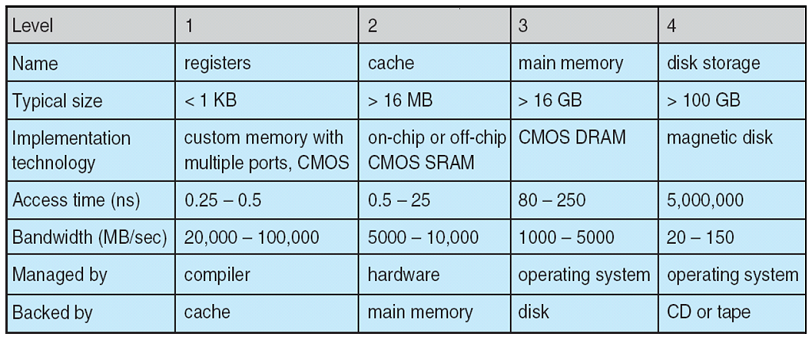 Operating System Concepts - 8th Edition Silberschatz, Galvin, Gagne ©2009
Reading an integer from disk 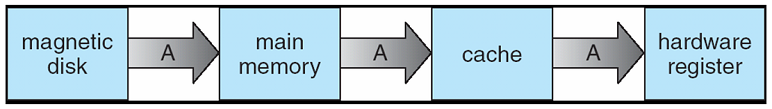 Operating System Concepts - 8th Edition Silberschatz, Galvin, Gagne ©2009
Multiprocessor (single cores) 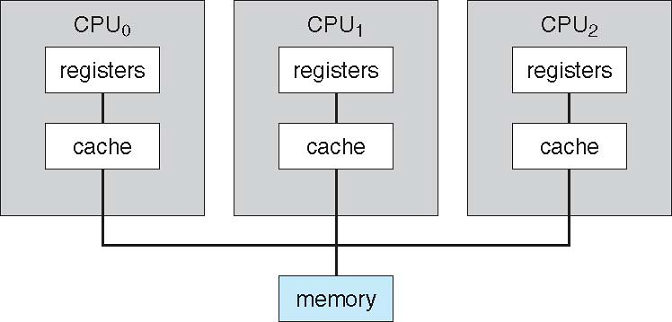 Operating System Concepts - 8th Edition Silberschatz, Galvin, Gagne ©2009
Single processor (2 cores) 
Operating System Concepts - 8th Edition Silberschatz, Galvin, Gagne ©2009
{kind=link}
{kind=link}
A Linux Cluster 
http://en.wikipedia.org/wiki/File:MEGWARE.CLIC.jpg
Blade Servers 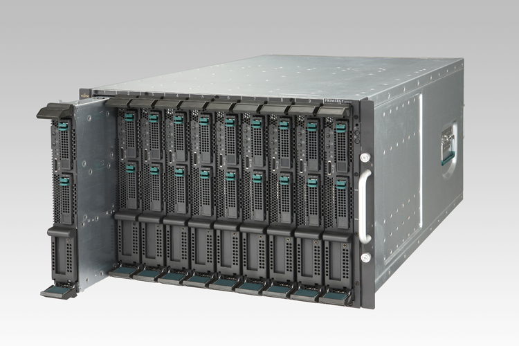
{kind=link}
{kind=link}
{kind=link}
{kind=link}
Modern Operating Systems
- Multitasking Operating Systems
- time-sharingtime-sharing (multitasking, vs. batch-mode)
- job schedulingscheduling
- time slicingtime slicing
- uses a timer to interruptinterrupt (vs. polling)
- virtual memoryvirtual memory
- cooperativecooperative vs. preemptivepreemptive
- Dual-Mode Operation
- Uses a mode bit - supported by the CPU
- User modeUser mode - Applications
- Kernel modeKernel mode (privileged mode, privileged instructions), provides protection for processes and other entities
- Process ManagementProcess Management
- a programprogram vs. a processprocess
- threadsthreads, light-weight processes
- OS creates, deletes, schedules, pauses, resumes processes (threads)
- OS provides synchronization synchronization and communicationcommunication between processes
- Memory ManagementMemory Management
- How does the OS arrange multiple programs in memory at once?
- How about MANY programs? How about MANY LARGE programs?
- How about when the total size of all programs adds up to more than the amount of memory on the computer?
- The answer is VIRTUAL memory.
- File Management
- How to keep track of:
- Huge number of files
- Of any size (several bytes to several giga-bytes)
- Allow for many to be open simultaneously, both reading and writing
- Different file systems (FAT, NTFS, APFS, ext4, etc.)
- Do it efficiently in terms of time and space
- Computing Environments
- Traditional (one person, one computer, maybe connected or disconnected)
- Client-ServerClient-Server (file, computing, web)
- Peer-to-PeerPeer-to-Peer, P2P (non-centralized)
- Web-based, now called CloudCloud-based (load balancing)
- PCs no longer the dominant device on the networks (phones, tablets, other smaller devices)
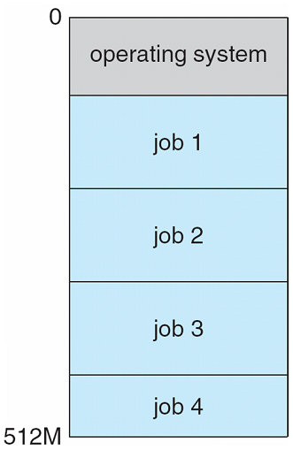 Operating System Concepts - 8th Edition Silberschatz, Galvin, Gagne ©2009
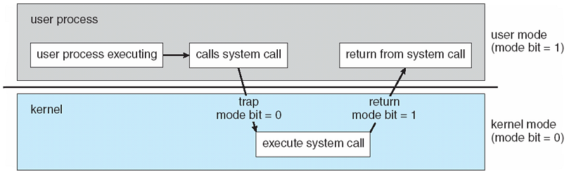 Operating System Concepts - 8th Edition Silberschatz, Galvin, Gagne ©2009
Client-Server Computing 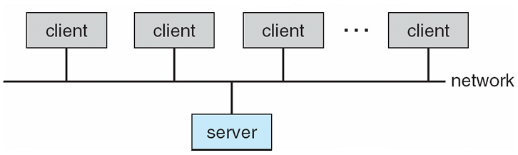 Operating System Concepts - 8th Edition Silberschatz, Galvin, Gagne ©2009
A Brief Look at the Evolution of Computers and Operating Systems
- Computers were very large and slow.
- Built using vacuum tubes, quite unreliable.
- The same group of people had to design, build, program, operate, and maintain the machine.
- The computer was programmed in machine language (ones and zeros) by using hardwires to specify the instructions.
- Programming languages and operating systems did not exist.
- These "computers" were used for straightforward numerical calculations.
- TransistorsTransistors were introduced, computers became more reliable
- There was a clear separation between the designer, builder, programmer, and operator.
- This machine was called a mainframemainframe.
- They were used for scientific and engineering calculations.
- The computer usage time was not optimal
- Time was wasted while the operators walked around in the "machine room".
- Why? These are the tasks needed to run a program:
- Write the program on paper
- Punch the program on cards
- Bring the cards to the input room
- Hand the cards to an operator who feeds the cards to the computer
- Once the output is ready
- The operator takes the printer output to the output room, and finally
- The programmer would collect the output from the output room
- Batch systems were introduced to:
- Reduce setup time by batching similar jobs
- Automatic job sequencing
- Automatically transfers control from one job to another.
- First rudimentary operating system.
- Convert multiple jobs from card format onto a magnetic tape, and then rewind the tape.
- Get the tape to the machine room and then mount the tape on a tape drive.
- Load the operating system tape onto the system tape reader. The job of the operating system was to automatically read the next job once the previous job was completed and the output was recorded onto an output tape.
- Once all the batch jobs are completed, the output tape is removed.
- The output is printed.
- The diagram below shows this process:
- The frustrations of batch processing.
- Third generation, circa 1960s-1980
- IBM introduced a new system called the 360 series. (The IBM System/360IBM System/360 was an architecture, not a machine.)
- The S/360 was still a mainframemainframe computer.
- It was the first major computer to use small-scale integrated circuits.
- This idea of family compatible computers was adopted by all other major manufacturers.
- MinicomputersMinicomputers were built. (DEC PDP-1, PDP-8)
- MultiprogrammingMultiprogramming
- Multiprogramming was introduced to solve the problem of CPU idling time or waiting time, which was significant.
- The memory was partitioned into several pieces with a different job in each partition.
- The CPU could be used by another program in memory while it was waiting for an I/O to complete.
- A multiprogramming system with four jobs in memory:
- For multiprogramming, an operating system needed:
- Memory management where the system must allocate the memory to several jobs.
- CPU schedulingCPU scheduling where the system must choose among several jobs ready to run.
- Allocation of devices.
- TimesharingTimesharing
- Multiprogramming solved the CPU idle time problem, however
- Programmers wanted to be able to use the computer at the same time.
- The time-sharing system shares the CPU with the jobs that want service.
- The CPU is multiplexed among several jobs that are kept in memory and on disk (the CPU is allocated to a job only if the job is in memory).
- The jobs are swapped in and out of memory to the disk.
- Fourth generation 1980-present
- VLSI VLSI - Very Large Scale Integration
- With VLSI technology, chips containing thousands (now tens of millions) of transistors on a square centimeter of silicon could be built. (Transistor countTransistor count)
- This technology gave rise to the idea of personal computers (microcomputers)
- MicrocomputersMicrocomputers
- The price drop of the microprocessor made it possible for single individuals to have their own personal computer.
- Personal computers are computer systems dedicated to a single user.
- Features:
- I/O devices such as keyboards, mouse devices, display screens, and small printers.
- User convenience and responsiveness.
- Individuals are often the sole users of a computer and do not need advanced CPU utilization or protection features.
- Can adopt technology developed for larger operating systems.
- May run several different types of operating systems (Windows, MacOS, UNIX, Linux)
- Microcomputer Operating Systems
- CP/MCP/M
- In 1974, Intel came up with the first general-purpose 8-bit CPU, the 80808080.
- A disk-based operating system called CP/M (Control program for Microcomputers) was used for the 8080.
- In 1977 CP/M was rewritten in order to be suitable for running other CPUs such as the Z80Z80.
- DOSDOS
- In the early 1980s, IBM designed the IBM PC. (Using the 8088 chip)
- Initially, the DOS (Disk Operating System) was used as the OS and it was called PC-DOSPC-DOS
- Later, a revised version of DOS called MS-DOSMS-DOS (MicroSoft Disk Operating system) was used as the OS
- Graphical User Interface (GUIGUI, pronounced goo'-ee)
- Early microcomputer operating systems were command line based.
- The user had to type in the commands as text.
- The GUI introduced the concept of Windows, Icons, Menus and Pointer (WIMPWIMP).
- GUI was user friendly, intended for "normal" users who knew nothing about computers, and had no intention to learn about computers.
- Apple's first GUI was the LisaLisa computer. The MacintoshMacintosh was also built with a GUI.
- WindowsWindows
- Microsoft decided to build a successor for MS-DOS
- They produced a GUI based system called Windows, which originally ran on top of MS-DOS.
- Initially, Windows was just a graphical environment on top of MS-DOS. It wasn't an operating system.
- Eventually, Windows became a 16-bit operating system that didn't require MS-DOS to run.
- Windows is now a 32-bit and a 64-bit OS
- LinuxLinux
- Linux began life circa 1991 and was a 32-bit OS, requiring an Intel 8038680386 processor
- Linux is hard to define because it runs on practically any kind of device (very small hand-helds to PCs to supercomputerssupercomputers).
- Linux has both a CLICLI (Command Line Interface) and a full-blown GUI, making it suitable for experts and novices alike.
- It is also available as 64-bit for PCs
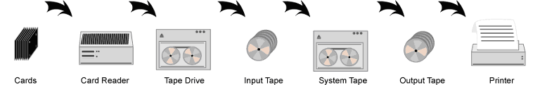
Operating System Concepts - 8th Edition Silberschatz, Galvin, Gagne ©2009
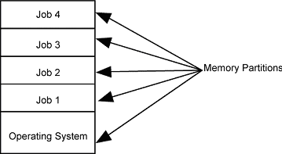
Operating System Concepts - 8th Edition Silberschatz, Galvin, Gagne ©2009
- Intel Skylake Roadmap September 2015 Very detailed discussion about Intel's CPU architecture.